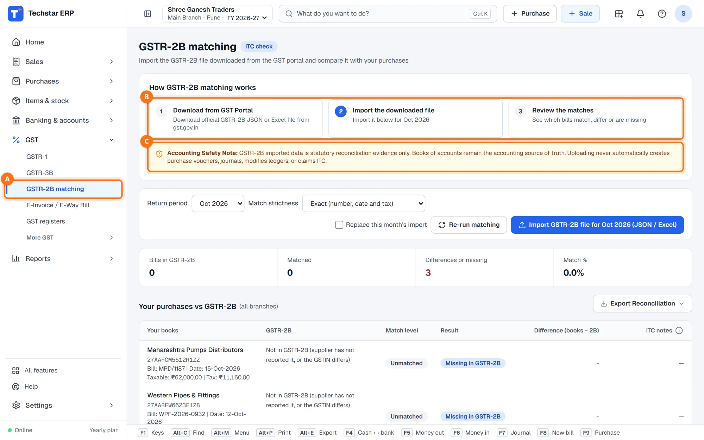
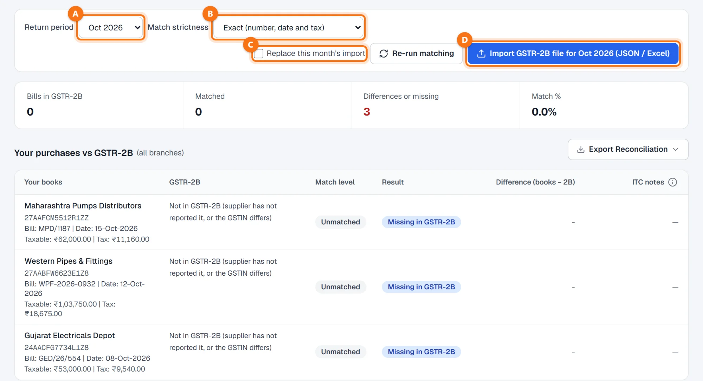
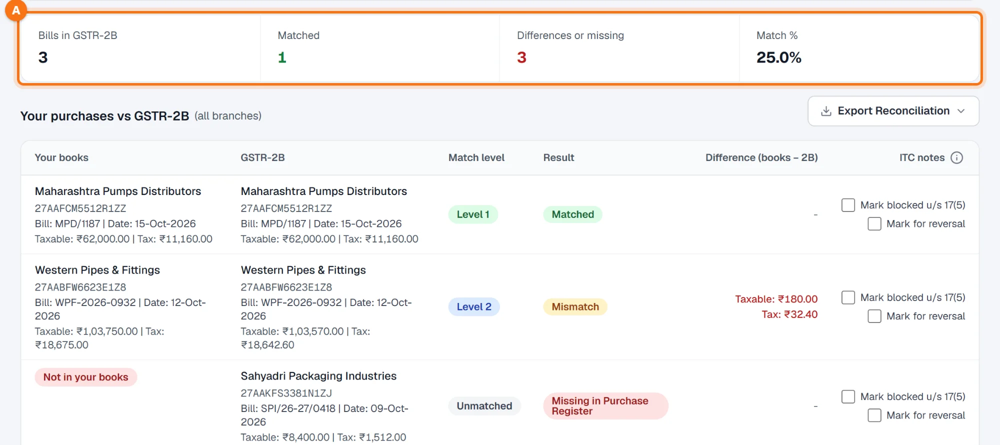
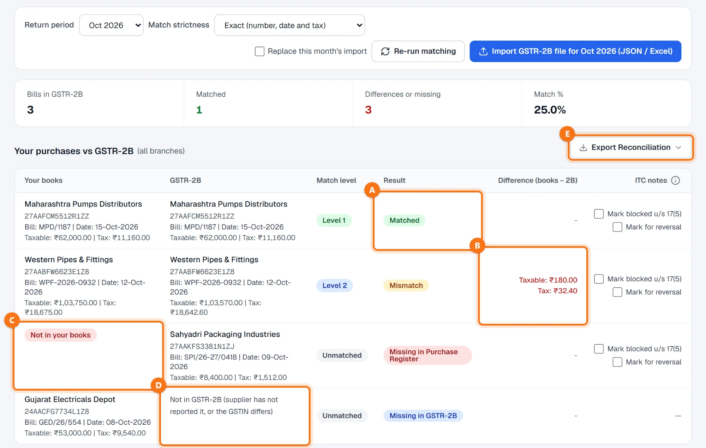
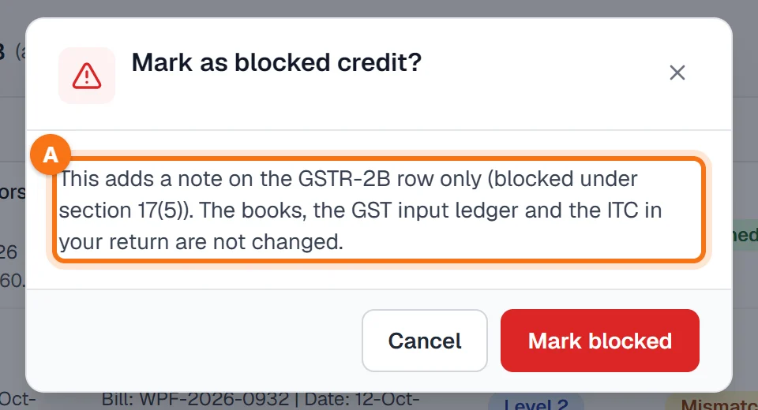

Techstar ERP is also in Hindi and Marathi. Click the round button with your initial (top right) → Language → हिन्दी or मराठी. The menu changes to that language; invoices and other legal documents print as usual. The screenshots in this guide use the English menu.
Before you start
GSTR-2B comes only from the file you download from the GST portal. There is no live link to the GST portal: you download, then import.
Your books stay as they are. The imported GSTR-2B is reconciliation evidence only. It never creates a purchase bill or a journal, never changes a ledger, the GST input ledger or stock, and never claims ITC. Your books remain the source of truth.
The month's purchase bills are entered — see How to add a purchase bill.
Open GSTR-2B matching
In the left menu click GST → GSTR-2B matching A. The card at the top B shows the three steps: download from the GST portal, import the downloaded file, review the matches. Below it, the Accounting Safety Note C repeats that the import never posts anything.

Download GSTR-2B from the GST portal
On gst.gov.in open Returns → GSTR-2B for the month and download the JSON or the Excel file. Keep the file as downloaded; the ERP reads the portal's own layout.
Import the file
- Return period A — the month of the GSTR-2B (it follows the month on screen; the example uses October 2026).
- Match strictness B — Exact (number, date and tax), Number and GSTIN (tax may differ) or Loose (number spelled differently). With a stricter choice, looser matches are shown as differences.
- Replace this month's import C — tick it when you import a GSTR-2B the portal has generated again; it replaces the month's earlier import and keeps the IMS actions you recorded.
Until a GSTR-2B is imported, every purchase bill of the month shows Missing in GSTR-2B. Click Import GSTR-2B file for Oct 2026 (JSON / Excel) D and choose the file.

The file is checked before anything is saved: its GSTIN must be one of your own GSTINs and its return period must be the month you chose. Every document is checked, and a bill imported before is skipped as a duplicate. A message then tells you how many documents were imported; rejected rows are listed with the reason.

The summary A shows Bills in GSTR-2B, Matched, Differences or missing and the Match %.
Read the results
Your purchases vs GSTR-2B puts each bill of your books next to the supplier's document in GSTR-2B, with the match level and the result:
| Result | What it means and what to do |
|---|---|
| Matched A | Same supplier GSTIN, number, date and tax. Nothing to do. |
| Mismatch B | The bill is found but the taxable value, tax or date differs. Difference (books − 2B) shows by how much. Check your bill; if the supplier made the mistake, ask them to correct it. |
| Missing in Purchase Register C | Not in your books: the supplier reported a bill you have not entered. Enter it if it is yours; if not, take it up with the supplier. |
| Missing in GSTR-2B D | In your books, but the supplier has not reported it (or the GSTIN differs). Its ITC waits until a GSTR-2B shows it. |
| Ineligible ITC | GSTR-2B shows the ITC as not available, or the row was marked blocked. |

GSTR-3B uses the same GSTR-2B to limit the ITC in table 4: a bill missing in GSTR-2B is deferred until a later GSTR-2B shows it. See Prepare GSTR-3B and Pre-filing checks.
ITC notes and export
For your own review you can tick Mark blocked u/s 17(5) or Mark for reversal on a GSTR-2B row. The ERP asks first and says what it does A: it only adds a note on the GSTR-2B row. No entry is posted, and the books, the GST input ledger and the ITC in your return are not changed. If a reversal is due, post it yourself from GST returns → ITC register.

Export Reconciliation (box E in the earlier screenshot) saves the list as Excel, CSV or PDF, headed with your business name. Re-run matching matches again, for example after you entered a missing bill.
Common questions
Does Techstar ERP fetch GSTR-2B from the GST portal?
Will importing GSTR-2B create purchase bills or claim ITC?
The import says the GSTIN or the period does not match.
I imported the same file twice. Are bills counted twice?
A bill shows "Mismatch" only because the supplier typed the number differently.
More guides
Screenshots are from Techstar ERP with a demo company (Shree Ganesh Traders, Pune). All names, GSTINs, amounts and document numbers are sample data.